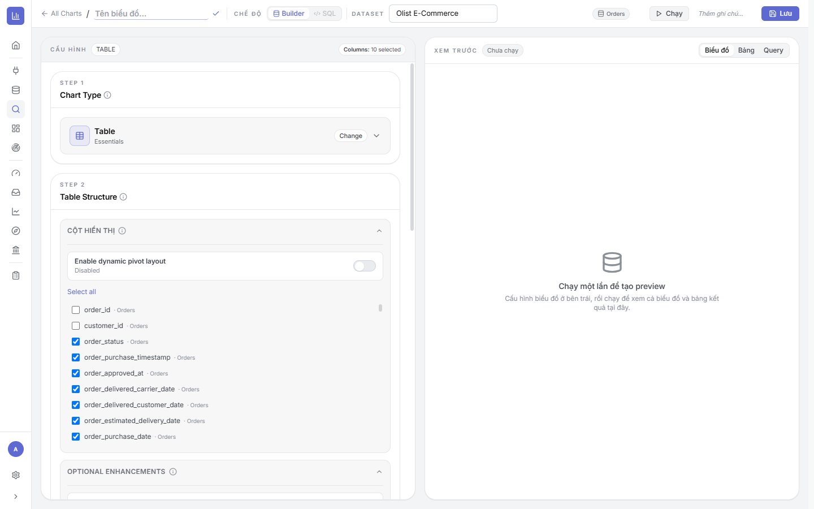
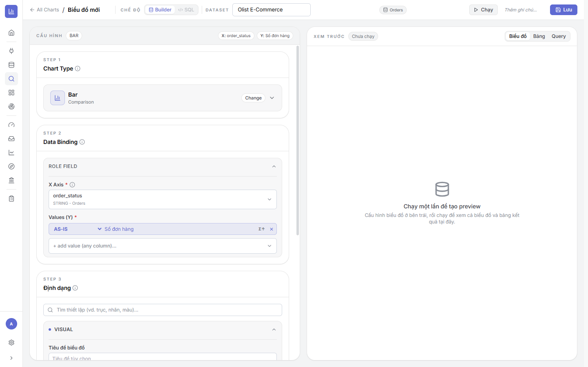
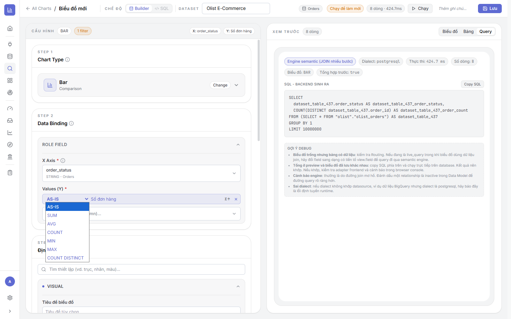
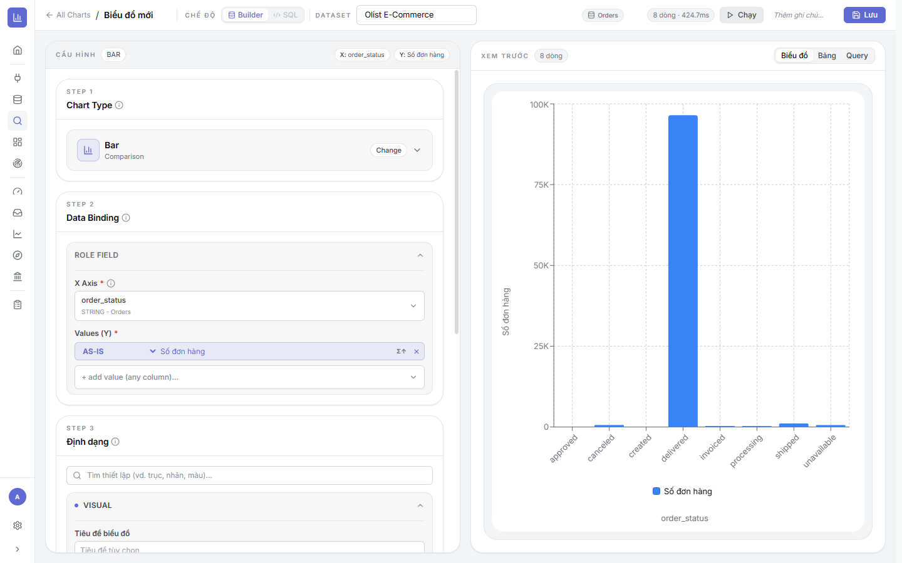
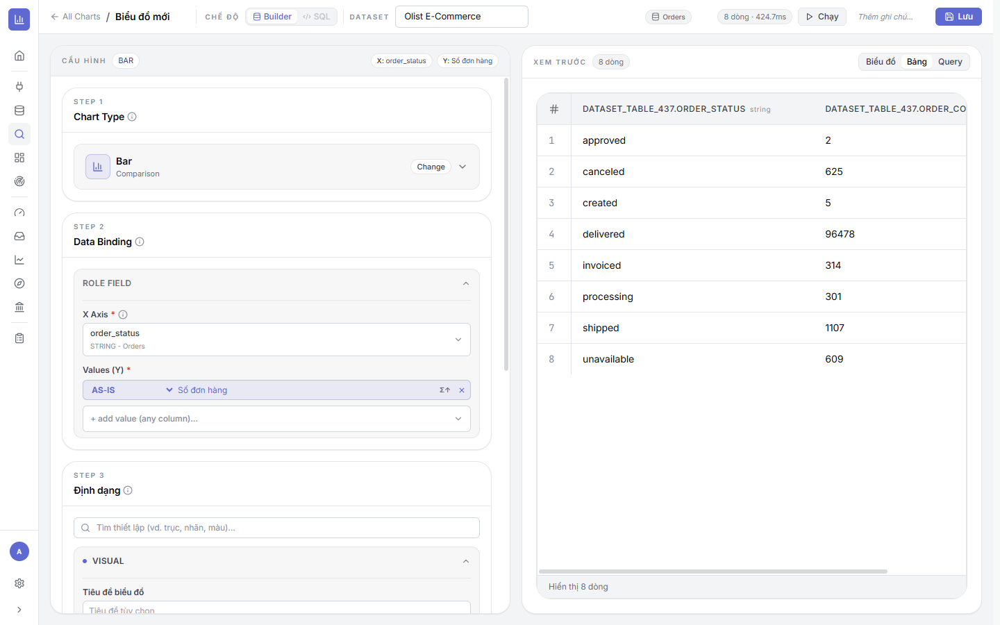
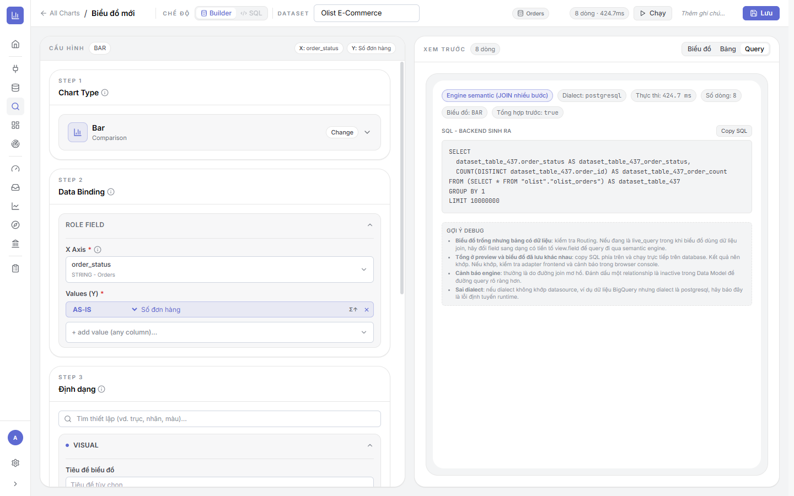
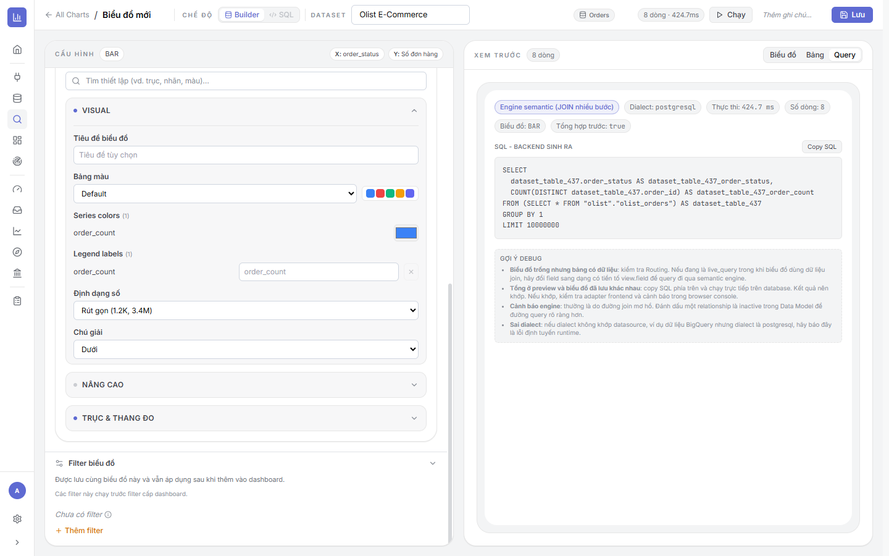
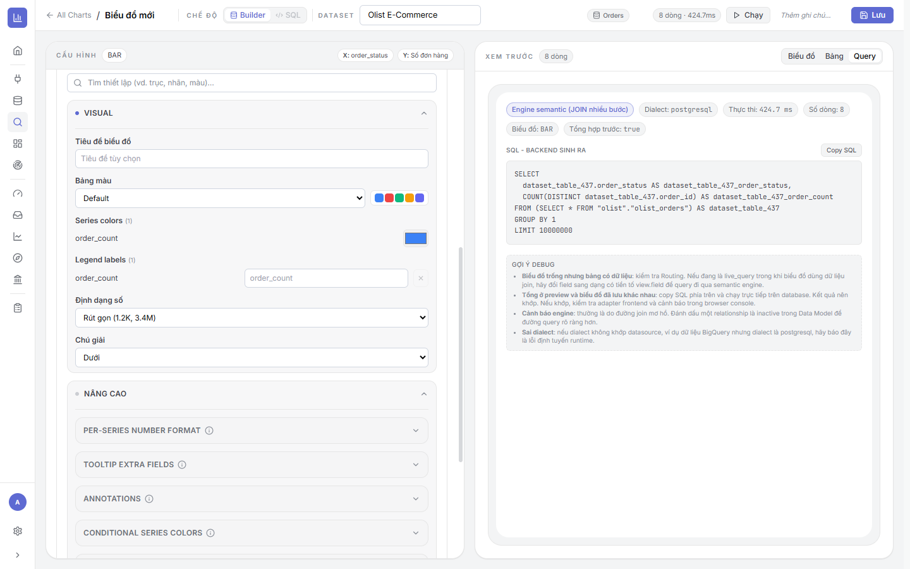
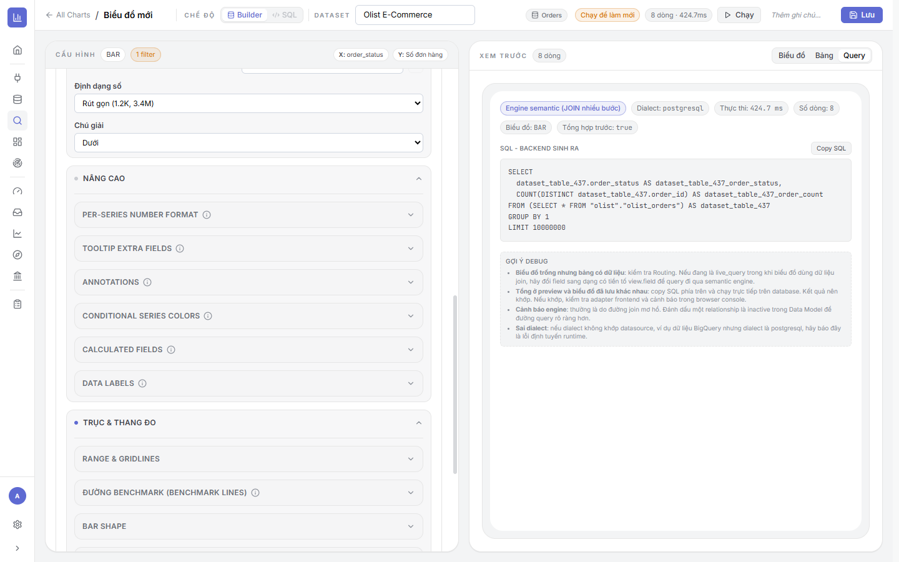
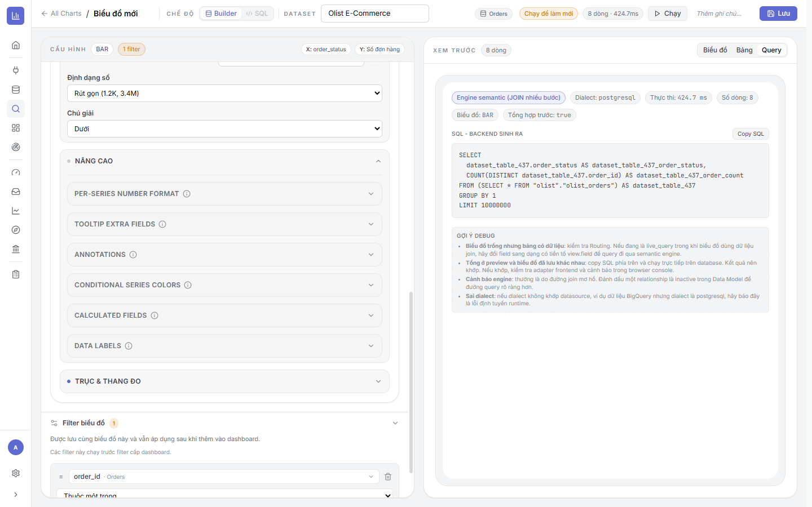

3.1Màn hình Explore — bố cục & các chế độ
Là gì: màn Explore chia 2 nửa. Trái = CẤU HÌNH (dựng biểu đồ theo 3 bước). Phải = XEM TRƯỚC (kết quả). Thanh trên cùng gom các điều khiển chính.
⚙ Các thành phần trên thanh trên
- Tên biểu đồ (ô "Tên biểu đồ…") + dấu ✓ để xác nhận tên.
- CHẾ ĐỘ: Builder (kéo-thả, mặc định) hoặc SQL (tự viết truy vấn — xem mục 3.11).
- DATASET: chọn dataset nguồn.
- Chạy (▷): chạy truy vấn để tạo/làm mới preview.
- Thêm ghi chú… và Lưu (lưu chart).
Nửa XEM TRƯỚC có 3 chế độ hiển thị: Biểu đồ, Bảng, Query (SQL) — sẽ dùng ở mục 3.6.
3.2Chọn Dataset & bảng gốc
⚙ Cách làm
- Ở header, mở DATASET và chọn (ví dụ Olist E-Commerce). Panel CẤU HÌNH mở khoá ngay.
- Bảng gốc được suy ra tự động từ field đầu tiên bạn chọn (ví dụ chip Orders ở góc phải panel) — bạn không phải chọn bảng thủ công.
- Đặt Tên biểu đồ thể hiện rõ ý đồ (metric + chiều), ví dụ “Số đơn theo trạng thái”.

3.3Bước 1 · Chọn loại biểu đồ (33 loại · 6 nhóm)
Là gì: ở STEP 1 · Chart Type, bấm Change để mở thư viện 33 loại biểu đồ, chia thành 6 nhóm:
- Essentials (6): Table, Matrix, KPI, Gauge, Bullet, Podium
- Comparison (6): Bar, Horizontal Bar, Grouped Bar, Stacked Bar, Bar + Line, Waterfall
- Trend (5): Line, Area, Time Series, Ribbon, Timeline
- Composition (6): Pie, Donut, Polar Area, Treemap, Funnel, Word Cloud
- Relationship (8): Scatter, Bubble, 9-Box Grid, Heatmap, Boxplot, Radar, Sankey, Sunburst
- Geo (2): Point Map, Region Map

3.4Bước 2 · Gán field vào Role (Data Binding)
Là gì: mỗi loại biểu đồ có bộ vai trò (role) riêng. Bạn kéo/chọn field của Dataset vào đúng role. Với Bar, hai role bắt buộc là:
- X Axis (trục X — chiều/dimension), ví dụ
order_status. - Values (Y) (giá trị — metric), ví dụ Số đơn hàng. Bấm “+ add value (any column)…” để thêm nhiều giá trị.
Các loại khác có role khác nhau, ví dụ: Line/Time Series có Time field; nhiều loại có Breakdown (tách nhóm màu); Scatter/Bubble dùng scatterX / scatterY; Table chuyển sang pivot với row/column/measure.

3.5Aggregation, nhiều giá trị & sắp xếp
Là gì: mỗi giá trị Y có bộ chọn cách tổng hợp (aggregation) ở đầu dòng. Bấm để chọn:
- AS-IS (giữ nguyên — dùng cho Measure đã tính sẵn), SUM, AVG, COUNT, MIN, MAX, COUNT DISTINCT.
- Biểu tượng Σ↑ cạnh giá trị để sắp xếp theo giá trị đó; dấu × để bỏ giá trị.

3.6Chạy & Xem trước — Biểu đồ / Bảng / Query (SQL)
Là gì: bấm Chạy để thực thi. Nửa phải cho xem kết quả ở 3 chế độ — kiểm tra chéo trước khi lưu.
⚙ Ba chế độ xem
- Biểu đồ: hình trực quan (kèm số dòng & thời gian chạy, ví dụ 8 dòng · 424.7ms).
- Bảng: dữ liệu thô đứng sau biểu đồ — để đối chiếu số (ví dụ delivered = 96.478).
- Query: SQL do backend sinh ra + nút Copy SQL, kèm chip thông tin (Engine semantic, Dialect, thời gian, số dòng, Tổng hợp trước) và mục Gợi ý debug.



3.7Bước 3 · Định dạng cơ bản (VISUAL)
Là gì: STEP 3 · Định dạng có ô tìm thiết lập (gõ “trục/nhãn/màu”) và nhóm VISUAL gồm:
- Tiêu đề biểu đồ — tiêu đề tuỳ chọn hiển thị trên chart.
- Bảng màu — chọn palette màu (Default + các bộ màu).
- Series colors — đổi màu từng chuỗi (ví dụ
order_count). - Legend labels — đổi nhãn hiển thị của chuỗi.
- Định dạng số — ví dụ Rút gọn (1.2K, 3.4M).
- Chú giải — vị trí legend (Trên/Dưới/Trái/Phải…).

3.8Định dạng nâng cao (NÂNG CAO)
Là gì: nhóm NÂNG CAO chứa các tuỳ chọn sâu, mỗi mục mở gập riêng:
- Per-series number format — định dạng số riêng từng chuỗi.
- Tooltip extra fields — thêm field vào tooltip khi rê chuột.
- Annotations — ghi chú/đánh dấu trên biểu đồ.
- Conditional series colors — tô màu theo điều kiện (ví dụ âm→đỏ, dương→xanh).
- Calculated fields — trường tính toán ngay trên chart.
- Data labels — hiện nhãn giá trị trực tiếp trên cột/điểm.

3.9Trục, thang đo & đường benchmark
Là gì: nhóm TRỤC & THANG ĐO điều chỉnh khung tọa độ:
- Range & gridlines — min/max của trục, đường lưới.
- Đường benchmark (benchmark lines) — vẽ đường mục tiêu/ngưỡng (ví dụ target doanh thu).
- Bar shape — kiểu dáng cột (bo góc, độ rộng…).

3.10Filter biểu đồ (lọc cấp chart)
Là gì: phần Filter biểu đồ (cuối panel) cho phép lọc dữ liệu ngay trong chart. Filter này được lưu cùng biểu đồ và chạy trước filter cấp Dashboard.
⚙ Cách làm
- Bấm + Thêm filter.
- Chọn field (ví dụ
order_id · Orders). - Chọn toán tử (ví dụ Thuộc một trong / bằng / lớn hơn / khoảng…) rồi nhập giá trị.
- Thêm nhiều điều kiện nếu cần; header hiện chip đếm số filter đang áp.

order_id + toán tử “Thuộc một trong”; ghi chú “chạy trước filter cấp dashboard”.3.11Chế độ SQL & Lưu chart
Chế độ SQL (Custom SQL): nếu Builder chưa đủ, chuyển CHẾ ĐỘ → SQL ở header để tự viết truy vấn cho biểu đồ (hợp với các phép tính đặc thù). Kết quả vẫn hiển thị ở nửa Xem trước như thường.
⚙ Lưu chart
- Đặt Tên biểu đồ rõ ràng ở header.
- (Tuỳ chọn) thêm ghi chú.
- Bấm Lưu. Chart được lưu vào thư viện All Charts và có thể tái sử dụng ở nhiều Dashboard.
3.12Xong Chương 3 — Checklist
- ✅ Chọn đúng Dataset và loại biểu đồ hợp câu hỏi.
- ✅ Gán đủ role bắt buộc (*); chọn đúng aggregation (Measure → AS-IS).
- ✅ Chạy và đối chiếu Biểu đồ ↔ Bảng ↔ SQL — số khớp.
- ✅ Đã định dạng (tiêu đề, màu, legend, định dạng số) và đặt filter chart nếu cần.
- ✅ Đặt tên rõ ràng và Lưu chart.
➡️ Tiếp theo: Chương 4 · Thư viện 33 loại chart — đi sâu từng loại: dùng khi nào, role riêng và tuỳ chọn đặc thù.